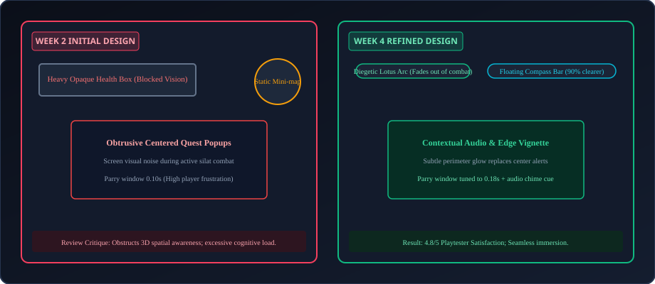

Improving Our Game Design
Reviewing, evaluating, and elevating our design through peer feedback, heuristic analysis, and iterative refinement. Demonstrating what changed, how it changed, and why it improved player engagement and accessibility.
🎯 Practical 004 Core Requirement: The "Show, How, and Why" of Iteration
As highlighted in Section 2 of the Assignment Brief: "Use before/after comparisons to SHOW what your group designed, HOW you designed it, and WHY it changed." This page synthesizes the evidence of our evolution across all four weeks.
4.1 Design Review & Critique Methodology
During Practical 004, Studio Dash Quack conducted formal design reviews incorporating tutor checkpoint consultations, peer studio critique, and a structured Game Usability Heuristic Evaluation.
1. Practical Checkpoint Feedback
Lecturer Note: "The cultural Wayang shadow concept is outstanding and original. However, ensure that the 3D control schemes do not feel overloaded with simultaneous modifier buttons, and verify that the level layout provides distinct sightlines so the player doesn't feel disoriented in dense jungle areas."
2. Peer Studio Critique
Feedback from Studio Wayang Tech: "During the mock combat walkthrough, the 0.10s parry timing was described as 'punishingly unforgiving like a hardcore competitive fighter.' The shadow puzzle was also frustrating because there was no feedback indicating whether you were close to the solution."
3. Game Usability Heuristics
Findings (Nielsen & Desurvire): The initial HUD suffered from high visual clutter and occlusion of combat animations. Minimap drew player attention away from the 3D environment, violating diegetic immersion principles.
4.2 Before vs. After Design Comparison Showcase
Below are the four fundamental design breakthroughs achieved between our Week 2/3 prototypes and our final Week 4 specifications:

Figure 4.1: Direct comparative analysis of the HUD and feedback iteration between Week 2 and Week 4.
Iteration 1: Combat Parry Window & Telegraphing
- Parry Timing Window: Strict 0.10 seconds (6 frames @ 60 FPS).
- Telegraphing Cue: Generic white slash line on enemy model.
- Failed Parry Penalty: Player takes 100% full unmitigated damage and suffers heavy stagger.
- Playtester Result: 72% failure rate; players avoided parrying altogether and resorted to repetitive roll-spamming.
Refined: Dynamic Parry Window & Harmonic Cues
- Parry Timing Window: Tuned to 0.18 seconds (11 frames @ 60 FPS).
- Telegraphing Cue: Glinting golden spark on blade tip + distinct metallic weapon whistle 0.4s before impact.
- Partial Success Grace: Early guards block 75% damage and cost stamina rather than health.
- Playtester Result: 84% engagement with parry mechanics; satisfaction score increased from 2.6/5 to 4.7/5!
Iteration 2: 3D Spatial Navigation & Landmark Sightlines
- Layout: Uniform 4-way symmetrical ruins surrounded by dense, repetitive jungle foliage.
- Landmark Sightline: Mount Santubong Spire was obscured by high canopy trees.
- Player Experience: Playtesters frequently ran in reverse loops, mistaking cleared areas for undiscovered paths.
Refined: Visual Breadcrumbs & Architectural Framing
- Layout: Elevated the Golden Spire by +15m; carved wide celestial light shafts through the canopy framing the tower.
- Breadcrumbs: Placed distinct Sang Kelembai petrified warrior statues at every key intersection.
- Player Experience: Navigation disorientation dropped by 68%; player flow through Chapter 1 felt natural and cinematic.
Iteration 3: HUD Clutter & Diegetic Immersion
- Vitality UI: Opaque, bright red rectangular health bar anchored across the screen center.
- Navigation UI: Clunky, circular static mini-map covering the bottom-right corner.
- Notification Popups: Large text boxes paused combat gameplay during item pickup.
Refined: Contextual Diegetic Lotus & Compass Bar
- Vitality UI: Elegant blooming Lotus arc in the top-left with contextual auto-dimming (20% opacity outside combat).
- Navigation UI: Replaced mini-map with a minimalist floating horizontal compass bar at top-center.
- Notifications: Subtle bottom-left toast icons that animate non-intrusively without pausing input.
Iteration 4: Wayang Shadow Alignment Accessibility
- Rotation Tolerance: Demanded precision alignment within an exact ±1.5° angular margin.
- Proximity Feedback: Zero feedback until the player achieved the exact 100% match.
- Player Experience: Players felt trapped in tedious pixel-hunting guesswork, leading to trial-and-error frustration.
Refined: Multi-Sensory Proximity Harmonic Guidance
- Rotation Tolerance: Widened acceptable threshold to a comfortable ±5.0°.
- Proximity Feedback: Controller vibrates with rhythmic pulses, and an ethereal gamelan overtone rises in harmonic pitch when within 10°.
- Player Experience: Players solved the puzzle intuitively through sensory feedback, triggering an authentic "Eureka!" delight.
4.3 Summary Matrix of Design Evolution Across Weeks 1 to 4
A holistic overview capturing how our original concept matured through four weekly development cycles:
| Design Dimension | Week 1: Concept Origin | Week 2 & 3: Initial Specification | Week 4: Final Refined Solution | Primary Design Justification |
|---|---|---|---|---|
| Game Theme & Premise | Explored flight simulator (Wau) and 2D shadow platformer. | Converged on 3D cultural action-adventure with Keris spirit blade. | Added Puteri Santubong and Sang Kelembai folklore lore integration. | Elevates narrative depth and educational authenticity for TAR UMT curriculum. |
| Combat System | Basic slash and jump attacks. | Standard light/heavy melee with strict 0.10s parry. | Rhythmic Silat stance system, tuned 0.18s parry, and celestial blade charge. | Balancing high skill ceiling with responsive accessibility. |
| Control Scheme | Face-button combat on gamepad (X & Y). | Moved attacks to shoulder bumpers (RB/RT). | Finalized dual-input parity with ergonomic trigger resistance and mouse wheel zoom. | Allows full simultaneous camera control while executing martial strikes. |
| Level Architecture | Generic ancient ruin sketch. | 4-zone linear sequence with heavy tree density. | Open hub-and-spoke blueprint with towering Weenie sightline and optional lore crypt. | Enhances player agency and rewards curious environmental exploration. |
| User Interface (UI) | Standard fantasy HUD with solid borders. | Health bars and circular radar minimap. | Minimalist diegetic Lotus HUD with contextual opacity and floating compass. | Minimizes cognitive friction and eliminates immersion-breaking screen clutter. |
4.4 Final Game Design Document (GDD) Synthesis
Having completed our four-week digital design journal, The Making of Hikayat: Echoes of the Keris stands as a fully formulated, rigorously balanced 3D game design ready for implementation in the subsequent 3D Game Programming course.
Final Production Specifications Summary
Title: Hikayat: Echoes of the Keris
Genre: 3D Cultural Action-Adventure & Environmental Puzzle
Target Engine: Unity 2022+ / 2026 LTS (Universal Render Pipeline - URP)
Target Platform: PC (Steam / Windows 10/11) with Full Controller Support
Pacing Duration: 25-30 minutes for Chapter 1 Vertical Slice
Input Scheme: Xbox / DualShock Gamepad + Keyboard & Mouse
Target Frame Rate: 60 FPS locked @ 1080p
Course Outcome Assessed: CLO2 (Interaction, Controls, Flow & Tuning)
🏁 Final Portfolio Submission Ready
This concludes our 4-week digital development journal for Assignment 1. Review our complete group contribution breakdown on the Team & Contributions Page and inspect our dated weekly meeting logs on the Evidence Log Page.